DeepLab atrous features and exact Potts refinement
Abstract
Pixel labels need broad context while preserving spatial boundaries. DeepLab uses atrous features and multiscale class scores; this report checks their graphs and derivatives,then visibly fits compact V1/V2 models and evaluates fixed small-grid CRF refinement.
Source example: examples/cpp/source/nn/1_convolutional_neural_networks/1.7_segmentation/deeplab_v1_v2.cpp.
The method
Dilated kernels enlarge receptive fields without extra weights. Dense ResNet suppresses strides after the requested output stride and increases dilation. V2 sums independent atrous score branches; fixed Gaussian/bilateral Potts mean-field messages optionally refine unary logits.
The concept diagram below is drawn by dm::graphics::Diagram. Its editable C++
source is the complete block below; regeneration uses the same datamunge toolchain
as the numerical examples. Exports consume the saved local SVG.
#include <dm/dm.hpp>
int main() {
std::filesystem::create_directories("build");
dm::graphics::Diagram diagram;
diagram.node("n0", {0.0, 0}, "Atrous dense features\nFour score rates");
diagram.node("n1", {5.2, 0}, "Visible Adam loop\nPaired state restore");
diagram.node("n2", {10.4, 0}, "Fixed Potts messages\nSmall-grid refinement");
diagram.edge("n0", "n1").edge("n1", "n2");
diagram.save_svg("build/deeplab_v1_v2_concept.svg");
}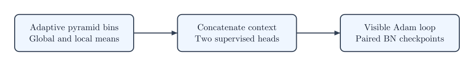
Executed tensor architecture
The figure selects the compact v2 path; the report separately compares v1 and v2.
This figure executes the inference configuration shown in the code, using a zero-valued shape probe without fitting or loading a checkpoint. Named stage boundaries group whole subgraphs where available; other nodes retain functional-layer detail. Exact batch-inclusive shapes and reachable parameter totals come from the trace. Shared linear scales map spatial dimensions and channel counts to blocks; the one-pixel visibility floor is disclosed in the legend. Labels use compact monospace text, rotate counterclockwise and sit beside their own glyphs. Arrows flow left to right; wide diagrams scroll at native size on the website.
#include <dm/dm.hpp>
int main() {
namespace n = dm::nn;
namespace m = n::models;
n::set_num_threads(2);
std::filesystem::create_directories("build");
n::ParameterStore p(17), state(18);
m::DeepLabV2Config c;
c.classes = 4;
c.backbone_depth = 18;
c.width_divisor = 8;
n::Module architecture_model(
[&](const n::Tensor& image) { return m::DeepLabV2(p, state, image, c).logits; },
"DeepLab atrous features and exact Potts refinement");
n::ModelPlotOptions options;
options.style = n::ModelPlotStyle::Flow;
options.detail = n::ModelPlotDetail::Blocks;
options.labels = {.type = n::ModelPlotLabel::NameAndShape, .size = 12, .wrap = 24};
options.spacing = {.layer = 24, .lane = 12, .label = 8, .margin = 20};
options.sizing.spatial_size = 96;
options.sizing.channel_size = 42;
options.sizing.minimum_extent = 1;
options.opacity = .8;
const auto diagram = architecture_model.plot(n::zeros({1, 64, 64, 3}), options);
diagram.save_svg("build/deeplab_v1_v2_architecture.svg");
std::print(
"{} displayed nodes; {} reachable learned values.\n",
diagram.nodes().size(),
diagram.parameter_count());
}109 displayed nodes; 185944 reachable learned values.
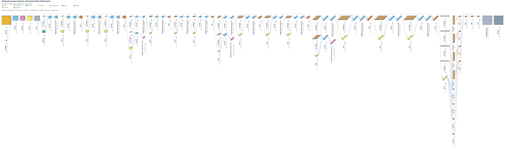
Four dilations with a known impulse
Atrous convolution inserts spacing between kernel taps without adding learned weights. DeepLab v1 uses dilated VGG conv5 and LargeFOV fc6. V2 uses a dense ResNet with later strides suppressed and corresponding dilation doubled; its ASPP is four independent linear class-score convolutions whose outputs sum. This differs from later feature-concatenation ASPP variants.
The following impulse uses rates1/2/3/4 with constant kernel coefficients .1/.2/.3/.4 and zero bias. Each branch has nine taps; the central response sums to1 and the whole response sums to9. Native independent tap/scatter fixtures check every output and input derivative on a rectangular grid.
#include <dm/dm.hpp>
int main() {
namespace n = dm::nn;
namespace m = n::models;
n::ParameterStore p(17);
const auto input =
n::equal(n::arange(0, 17 * 17), 144.).to(n::DType::Float32).reshape({1, 17, 17, 1});
for (int i = 0; i < 4; ++i) {
const auto name = "aspp/rate" + std::to_string(i + 1);
p.set(name + "/W", n::full({3, 3, 1, 1}, .1 * (i + 1)));
p.set(name + "/b", n::zeros({1}));
}
auto x = input.clone().requires_grad_();
const auto branches = m::AtrousScorePyramid(p, "aspp", x, 1, {1, 2, 3, 4});
auto output = branches[0];
for (int i = 1; i < 4; ++i)
output = output + branches[i];
const auto gradient = n::grad(n::sum(output), {x})[0];
if (std::abs(output.at({0, 8, 8, 0}) - 1.) > 1e-6 ||
std::abs(n::sum(output).item() - 9.) > 1e-6 ||
n::count_nonzero(output).item<int>() != 33)
return 1;
auto a = n::plot_tensor_map(output.reshape({17, 17}), 0, 1),
b = n::plot_tensor_map(gradient.reshape({17, 17}), 0, 9);
a.title("Summed four-rate impulse response");
b.title("Exact summed-output input gradient");
std::filesystem::create_directories("build");
dm::graphics::RLayout::create(1, 2).add(a).add(b).size(1200, 550).fit_panels().save_svg(
"build/deeplab_v1_v2_atrous.svg");
std::print("Centre response1,total response9,33 distinct nonzero tap positions; native "
"independent rectangular values and every input derivative pass.\n");
}Centre response1,total response9,33 distinct nonzero tap positions; native independent rectangular values and every input derivative pass.
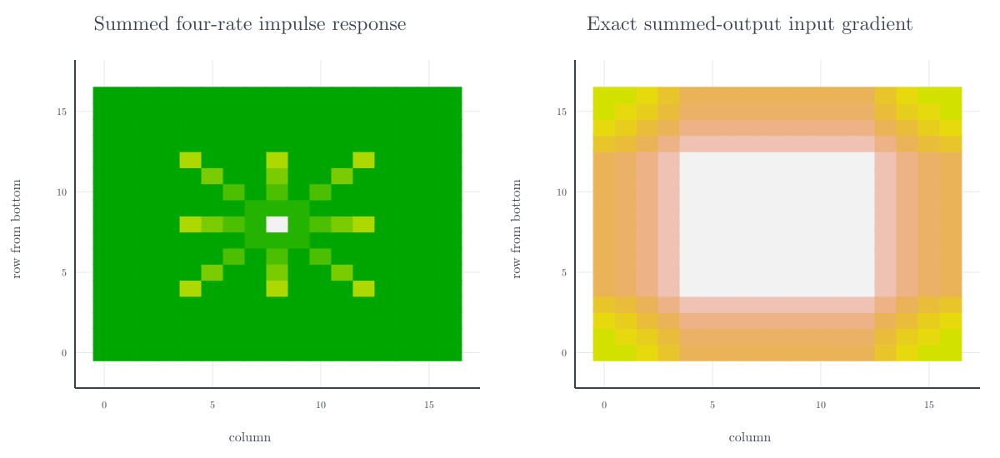
Exact small-grid Gaussian/bilateral Potts refinement
The fixed pairwise kernel combines a spatial Gaussian and an RGB bilateral
Gaussian. Each removes self edges and independently normalizes by
sqrt(max(degree_i*degree_j,1e-30)),then weighted components add. Kernel
construction is detached tensor preprocessing: Float32 RGB differences and
Float64 distance/exponential/normalization arithmetic return Float32 affinities.
The source numerical convention is retained without host image arithmetic.
Starting at Q=softmax(logits),five Potts mean-field updates are
Q=softmax(logits+K*Q). The all-class message is a per-pixel constant removed
by softmax. Gradients flow through all iterations to unary logits. This exact
O(pixels²) reference is limited to4096 pixels; it does not implement the
paper's fast permutohedral filtering. The toy has two same-colour pixels
and a different-colour third pixel. Bilateral context resolves the ambiguous
middle unary while preserving the colour boundary. Independent native all-pair
Gaussian kernels,host iterations and every unary central difference pass.
#include <dm/dm.hpp>
int main() {
namespace n = dm::nn;
namespace m = n::models;
m::DenseCrfConfig cfg;
cfg.spatial_weight = .1f;
cfg.appearance_weight = 4;
cfg.appearance_sigma = 2;
const auto image = n::tensor({.1, .1, .1, .1, .1, .1, .9, .9, .9}, {1, 3, 3});
const auto kernel = m::DenseCrfKernel(image, cfg);
auto unary = n::tensor({-3., 3., .2, 0., 3., -3.}, {3, 2}).requires_grad_();
const auto raw = n::softmax(unary, -1), q = m::DenseCrfMeanField(unary, kernel, 5);
const auto derivative =
n::grad(n::sum(q * n::tensor({.1, .9, .3, -.4, .8, -.2}, {3, 2})), {unary})[0];
if (q.at({1, 1}) <= q.at({1, 0}) || q.at({2, 0}) <= q.at({2, 1}) || kernel.requires_grad() ||
!std::isfinite(n::sum(n::square(derivative)).item()))
return 1;
auto a = dm::graphics::RPlot::create(), b = dm::graphics::RPlot::create();
for (int c = 0; c < 2; ++c) {
const auto positions = n::arange(0, 3) + (c ? .15 : -.15);
const auto color = c ? dm::graphics::RGB{220, 38, 38} : dm::graphics::RGB{37, 99, 235};
const auto name = "class" + std::to_string(c);
a.bars(positions.to_vector<double>(), n::slice_axis(raw, 1, c, c + 1).to_vector<double>(),
name, color, .27);
b.bars(positions.to_vector<double>(), n::slice_axis(q, 1, c, c + 1).to_vector<double>(),
name, color, .27);
}
a.title("Unary-only probabilities")
.x_label("pixel0/1 same RGB;2 different")
.y_label("class probability")
.x_limits(-.5, 2.5)
.y_limits(0, 1.3);
b.title("Five fixed Potts mean-field steps")
.x_label("pixel index")
.y_label("class probability")
.x_limits(-.5, 2.5)
.y_limits(0, 1.3);
std::filesystem::create_directories("build");
dm::graphics::RLayout::create(1, 2).add(a).add(b).size(1200, 550).fit_panels().save_svg(
"build/deeplab_v1_v2_crf_toy.svg");
std::print("Ambiguous middle pixel: class1 probability {:.6f}->{:.6f}; third remains class0 "
"{:.6f}. Six finite unary derivatives; detached kernel with zero self edges. "
"Native all-pair/iteration/finite-difference oracles pass.\n",
raw.at({1, 1}), q.at({1, 1}), q.at({2, 0}));
}Ambiguous middle pixel: class1 probability 0.450166->0.978115; third remains class0 0.997280. Six finite unary derivatives; detached kernel with zero self edges. Native all-pair/iteration/finite-difference oracles pass.
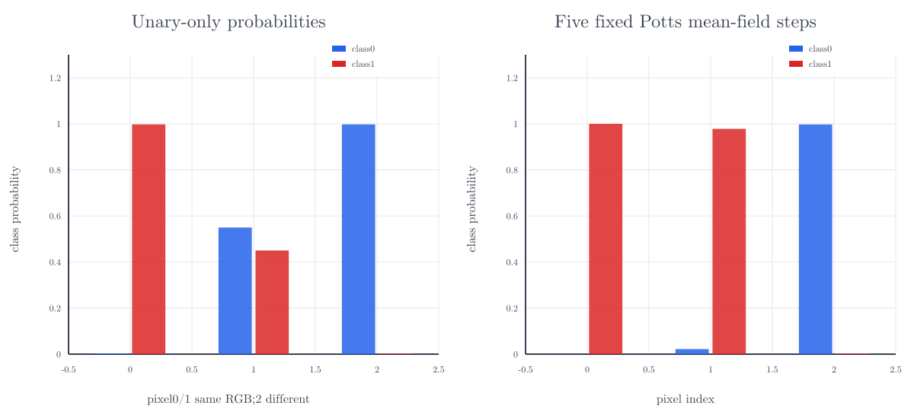
Full graphs and dense-backbone stride checks
Full V1 has20,505,429 learned scalars and32 learned tensor gradients,no BN state. Full V2 uses ResNet101 and rates6/12/18/24,44,048,532 learned and 105,344 moving-state scalars,320 learned tensors. Both full forwards/backwards execute below at33x33. Native stride32/16/8 ResNet18 checks preserve the same 176,712 learned/1,200 state count while changing stage resolution.
Compact V1 divides VGG widths by8,fc128/rate4 and disables dropout; it has 321,452 scalars. Compact V2 uses ResNet18/divisor8,rates1/2/3/4 and185,944 learned/1,200 state scalars. All compact tensor derivatives are nonzero in native96-pixel checks. No pretrained weights or VOC accuracy is claimed.
#include <dm/dm.hpp>
int main() {
namespace n = dm::nn;
namespace m = n::models;
n::set_num_threads(2);
for (bool v2 : {false, true}) {
n::ParameterStore p(17), state(18);
const auto x = n::sin(.13 * n::arange(0, 33 * 33 * 3)).reshape({1, 33, 33, 3});
const auto net = v2 ? m::DeepLabV2(p, state, x, {}, true) : m::DeepLabV1(p, x, {}, true);
const auto g = n::grad(n::mean(n::square(net.logits)), p.parameters());
if (p.count() != (v2 ? 44048532 : 20505429) || state.count() != (v2 ? 105344 : 0) ||
g.size() != (v2 ? 320 : 32) || net.logits.shape() != n::Shape{1, 33, 33, 21})
return 1;
for (const auto &v : g)
if (!v.defined() || !std::isfinite(n::sum(n::square(v.to(n::DType::Float64))).item()))
return 1;
std::print("Full DeepLab v{}:{} learned/{} state scalars,all{} finite defined gradients "
"at33px.\n",
v2 ? 2 : 1, p.count(), state.count(), g.size());
}
}Full DeepLab v1:20505429 learned/0 state scalars,all32 finite defined gradients at33px. Full DeepLab v2:44048532 learned/105344 state scalars,all320 finite defined gradients at33px.
Actual image/mask data and visible whole-model Adam
The tensor generator creates64 fitting/16 validation/16 test96-pixel RGB shape scenes,seeds11/22/33. Brightness,noise and tint are class-independent, and later objects occlude earlier labels. Tensor RNG differs from the old mt19937 fixed-seed pixels. Palette: background dark,circle red,rectangle green, triangle blue. The first four fitting pairs are shown below.
#include <dm/dm.hpp>
int main() {
namespace n = dm::nn;
namespace m = n::models;
const auto data = m::TensorSegmentationShapes(64, 96, 11);
std::vector<n::Tensor> gallery;
const auto colored = m::ColorSegmentationLabels(n::slice_axis(data.labels, 0, 0, 4));
for (int i = 0; i < 4; ++i) {
gallery.push_back(n::slice_axis(data.images, 0, i, i + 1));
gallery.push_back(n::slice_axis(colored, 0, i, i + 1));
}
std::filesystem::create_directories("build");
n::save_image_grid(n::concat(gallery, 0), "build/deeplab_v1_v2_data.png", 2, 0., 1., 3, 1.,
2);
const auto weights = m::SegmentationClassWeights(data.labels, 4);
std::print(
"64 fitting RGB images96x96; classes0 background,1 circle,2 rectangle,3 triangle. "
"Fit-only inverse-square-root pseudocount weights {:.6f}/{:.6f}/{:.6f}/{:.6f}. "
"Noise,tint and brightness are class-independent; later objects occlude earlier masks. "
"Tensor RNG changes fixed-seed pixels relative to the old mt19937 generator.\n",
weights.at({0}), weights.at({1}), weights.at({2}), weights.at({3}));
}64 fitting RGB images96x96; classes0 background,1 circle,2 rectangle,3 triangle. Fit-only inverse-square-root pseudocount weights 1.149431/3.477891/3.045941/4.357872. Noise,tint and brightness are class-independent; later objects occlude earlier masks. Tensor RNG changes fixed-seed pixels relative to the old mt19937 generator.
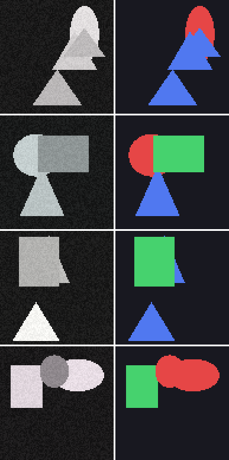
Fit-only inverse-square-root class weights use pseudocount1. Weighted CE is
normalized by selected pixel-weight sum. Each model warms all leaves before
Adam(.001),then fits12 epochs,batch4,192 visible updates with explicit
.00005*sum(kernel²) penalty. Every learned parameter is optimized. V1 has
no BN state; V2 moving moments are saved/restored with learned parameters.
Strict validation mean IoU selects each checkpoint,then restoration reproduces
the selected score before test evaluation.
Fixed CRF refinement is evaluated separately on the first four test images sampled32x32 at pixel centres. At96->32,this selects coordinates1,4,7,...,94 for images,logits and labels alike. Its before/after mIoU is a distinct subset/ resolution measurement from the full16-image96px test metric. The CRF's fixed settings see no fitting or validation tuning and need not improve every result.
#include <dm/dm.hpp>
int main() {
int rendered_confusions = 0;
namespace n = dm::nn;
namespace m = n::models;
n::set_num_threads(2);
const auto fit = m::TensorSegmentationShapes(64, 96, 11),
validation = m::TensorSegmentationShapes(16, 96, 22),
test = m::TensorSegmentationShapes(16, 96, 33);
const auto weights = m::SegmentationClassWeights(fit.labels, 4);
const int n_epochs = 12; // 16 batches of four per epoch
std::vector<double> epochs;
for (int epoch = 1; epoch <= n_epochs; ++epoch)
epochs.push_back(epoch);
auto loss_plot = dm::graphics::RPlot::create(), score_plot = dm::graphics::RPlot::create();
const std::array<dm::graphics::RGB, 3> colors = {{{37, 99, 235}, {22, 163, 74}, {220, 38, 38}}};
int color_index = 0;
double max_loss = 0;
std::filesystem::create_directories("build");
std::filesystem::create_directories("figures");
for (int variant : {1, 2}) {
n::ParameterStore p(17), state(17);
m::DeepLabV1Config v1;
v1.classes = 4;
v1.width_divisor = 8;
v1.fc_width = 128;
v1.fc_rate = 4;
v1.keep_probability = 1;
m::DeepLabV2Config v2;
v2.classes = 4;
v2.backbone_depth = 18;
v2.width_divisor = 8;
v2.rates = {1, 2, 3, 4};
const auto forward = [&](const n::Tensor& images, bool training) {
return variant == 1 ? m::DeepLabV1(p, images, v1, training).logits
: m::DeepLabV2(p, state, images, v2, training).logits;
};
// Create every learnable convolution/score leaf before Adam captures the store.
{
n::NoGradGuard guard;
forward(n::slice_axis(fit.images, 0, 0, 1), false);
}
n::OptimizerConfig adam_config;
adam_config.kind = n::OptimizerKind::Adam;
n::Optimizer adam(p, .001, adam_config);
n::BatchOrder batches(64, 4, 29);
std::vector<n::Tensor> kernels;
for (const auto& leaf : p.parameters())
if (leaf.dim() > 1)
kernels.push_back(leaf);
const std::string prefix = "build/deeplab_v1_v2_" + std::to_string(variant);
double best = -1;
int selected = 0, updates = 0;
std::vector<double> losses, miou;
const auto evaluate = [&](const m::TensorSegmentationData& data) {
n::NoGradGuard guard;
auto confusion = n::zeros({4, 4}, n::DType::Int64);
for (int first = 0; first < data.images.shape()[0]; first += 8) {
const auto end = std::min<std::int64_t>(first + 8, data.images.shape()[0]);
const auto logits = forward(n::slice_axis(data.images, 0, first, end), false);
confusion =
confusion + m::SegmentationPredictionMetrics(
n::argmax(logits, 3), n::slice_axis(data.labels, 0, first, end), 4)
.confusion;
}
return m::SegmentationConfusionMetrics(confusion);
};
std::print(
"Variant{}: {} learned scalars. Fit-only weights "
"{:.6f}/{:.6f}/{:.6f}/{:.6f}.\n",
variant,
p.count(),
weights.at({0}),
weights.at({1}),
weights.at({2}),
weights.at({3}));
std::print(
"| variant | epoch | weighted pixel CE | validation mIoU |\n|---:|---:|---:|---:|\n");
for (int epoch = 1; epoch <= n_epochs; ++epoch) {
batches.begin_epoch();
double total = 0;
std::size_t seen = 0;
for (auto rows = batches.next(); !rows.empty(); rows = batches.next()) {
const auto batch = m::TensorSegmentationBatch(fit, n::from_vector(rows));
const auto logits = forward(batch.first, true);
const auto ce = m::SegmentationCrossEntropy(logits, batch.second, 4, weights);
n::Tensor penalty = n::zeros({});
for (const auto& kernel : kernels)
penalty = penalty + n::sum(n::square(kernel));
if (!std::isfinite(ce.item()))
return 1;
total += ce.item() * rows.size();
seen += rows.size();
adam.minimize(ce + .00005 * penalty);
++updates;
}
const auto metric = evaluate(validation);
losses.push_back(total / double(seen));
miou.push_back(metric.mean_iou.item());
if (miou.back() > best) {
best = miou.back();
selected = epoch;
p.save(prefix + "_best.npz");
state.save(prefix + "_best_state.npz");
}
std::print("| {} | {} | {:.6f} | {:.6f} |\n", variant, epoch, losses.back(), miou.back());
}
p.load(prefix + "_best.npz");
state.load(prefix + "_best_state.npz");
const auto restored = evaluate(validation), metric = evaluate(test);
{
n::NoGradGuard guard;
std::vector<n::Tensor> heldout_predictions;
for(std::int64_t first=0;first<test.images.size(0);first+=8){const auto end=std::min(first+8,test.images.size(0));heldout_predictions.push_back(n::argmax(forward(n::slice_axis(test.images,0,first,end),false),3));}
n::save_npz("build/deeplab_v1_v2_pixels_"+std::to_string(rendered_confusions)+".npz",{{"truth",test.labels},{"prediction",n::concat(heldout_predictions,0)},{"counts",metric.confusion},{"metrics",n::stack({metric.pixel_accuracy,metric.mean_iou},0)}});
}
const auto count_matrix = n::ConfusionMatrix::from_counts(metric.confusion);
const auto index = std::to_string(rendered_confusions++);
count_matrix.save_svg(
"build/deeplab_v1_v2_confusion_api_" + index + ".svg",
{.title = "Selected-checkpoint pixel counts"});
count_matrix.save_svg(
"build/deeplab_v1_v2_confusion_api_" + index + "_normalized.svg",
{.title = "Selected-checkpoint pixel recall",
.normalization = n::ConfusionMatrixNormalization::True});
if (std::abs(restored.mean_iou.item() - best) > 1e-12 || updates != 16 * n_epochs)
return 1;
n::NoGradGuard guard;
std::vector<n::Tensor> gallery;
const auto prediction = n::argmax(forward(n::slice_axis(test.images, 0, 0, 4), false), 3);
const auto truth = m::ColorSegmentationLabels(n::slice_axis(test.labels, 0, 0, 4)),
colored = m::ColorSegmentationLabels(prediction);
for (int i = 0; i < 4; ++i) {
gallery.push_back(n::slice_axis(test.images, 0, i, i + 1));
gallery.push_back(n::slice_axis(truth, 0, i, i + 1));
gallery.push_back(n::slice_axis(colored, 0, i, i + 1));
}
const auto image_name = "deeplab_v1_v2_predictions_" + std::to_string(variant) + ".png";
n::save_image_grid(n::concat(gallery, 0), "build/" + image_name, 3, 0., 1., 3, 1., 2);
std::filesystem::copy_file(
"build/" + image_name,
"figures/" + image_name,
std::filesystem::copy_options::overwrite_existing);
// Fixed CRF inference is evaluated separately on32px pixel-centre samples.
auto before = n::zeros({4, 4}, n::DType::Int64), after = n::zeros({4, 4}, n::DType::Int64);
std::vector<n::Tensor> crf_gallery;
for (int i = 0; i < 4; ++i) {
const auto image = m::SampleSegmentationGrid(n::slice_axis(test.images, 0, i, i + 1)),
unary = m::SampleSegmentationGrid(
forward(n::slice_axis(test.images, 0, i, i + 1), false))
.reshape({1024, 4}),
truth = m::SampleSegmentationGrid(
n::slice_axis(test.labels, 0, i, i + 1).reshape({1, 96, 96, 1}))
.reshape({1, 32, 32}),
raw = n::argmax(unary, 1).reshape({1, 32, 32}),
refined =
n::argmax(
m::DenseCrfMeanField(unary, m::DenseCrfKernel(image.reshape({32, 32, 3}))),
1)
.reshape({1, 32, 32});
before = before + m::SegmentationPredictionMetrics(raw, truth, 4).confusion;
after = after + m::SegmentationPredictionMetrics(refined, truth, 4).confusion;
crf_gallery.push_back(image);
crf_gallery.push_back(m::ColorSegmentationLabels(truth));
crf_gallery.push_back(m::ColorSegmentationLabels(raw));
crf_gallery.push_back(m::ColorSegmentationLabels(refined));
}
const auto crf_name = "deeplab_v1_v2_crf_" + std::to_string(variant) + ".png";
n::save_image_grid(n::concat(crf_gallery, 0), "build/" + crf_name, 4, 0., 1., 3, 1., 3);
std::filesystem::copy_file(
"build/" + crf_name,
"figures/" + crf_name,
std::filesystem::copy_options::overwrite_existing);
std::print(
"Variant{} fixed five-step CRF on first four32px sampled test scenes: mIoU "
"{:.6f} -> {:.6f}. This subset/resolution score is separate from the "
"full16-scene96px test metric.\n",
variant,
m::SegmentationConfusionMetrics(before).mean_iou.item(),
m::SegmentationConfusionMetrics(after).mean_iou.item());
const auto color = colors[color_index++];
const auto name = "DeepLab v" + std::to_string(variant);
loss_plot.lines(epochs, losses, name, color);
score_plot.lines(epochs, miou, name, color);
max_loss = std::max(max_loss, *std::max_element(losses.begin(), losses.end()));
std::print(
"Variant{} restored epoch{}: validation mIoU {:.6f}; test pixel accuracy "
"{:.6f}, mean IoU {:.6f}; per-class IoU(background,circle,rectangle,triangle) "
"{:.6f}/{:.6f}/{:.6f}/{:.6f}. {} explicit Adam updates.\n",
variant,
selected,
best,
metric.pixel_accuracy.item(),
metric.mean_iou.item(),
metric.iou.at({0}),
metric.iou.at({1}),
metric.iou.at({2}),
metric.iou.at({3}),
updates);
}
loss_plot.title("DeepLab weighted pixel loss")
.x_label("epoch")
.y_label("unregularized weighted CE")
.y_limits(0, max_loss * 1.3);
score_plot.title("Validation mean IoU selection")
.x_label("epoch")
.y_label("present-class mIoU")
.y_limits(0, 1.3);
dm::graphics::RLayout::create(1, 2)
.add(loss_plot)
.add(score_plot)
.size(1200, 550)
.fit_panels()
.save_svg("build/deeplab_v1_v2_training.svg");
}Variant1: 321452 learned scalars. Fit-only weights 1.149431/3.477891/3.045941/4.357872.
| variant | epoch | weighted pixel CE | validation mIoU |
|---|---|---|---|
| 1 | 1 | 1.288375 | 0.223740 |
| 1 | 2 | 1.085301 | 0.238660 |
| 1 | 3 | 0.969457 | 0.323199 |
| 1 | 4 | 0.847254 | 0.362737 |
| 1 | 5 | 0.766814 | 0.320154 |
| 1 | 6 | 0.662649 | 0.370159 |
| 1 | 7 | 0.623251 | 0.409998 |
| 1 | 8 | 0.580045 | 0.428140 |
| 1 | 9 | 0.492262 | 0.411564 |
| 1 | 10 | 0.421605 | 0.481386 |
| 1 | 11 | 0.361132 | 0.490399 |
| 1 | 12 | 0.343299 | 0.492085 |
Variant1 fixed five-step CRF on first four32px sampled test scenes: mIoU 0.362334 -> 0.392180. This subset/resolution score is separate from the full16-scene96px test metric. Variant1 restored epoch12: validation mIoU 0.492085; test pixel accuracy 0.829224, mean IoU 0.509540; per-class IoU(background,circle,rectangle,triangle) 0.870189/0.316618/0.408376/0.442978. 192 explicit Adam updates. Variant2: 185944 learned scalars. Fit-only weights 1.149431/3.477891/3.045941/4.357872.
| variant | epoch | weighted pixel CE | validation mIoU |
|---|---|---|---|
| 2 | 1 | 2.055294 | 0.281468 |
| 2 | 2 | 1.093338 | 0.330258 |
| 2 | 3 | 0.626217 | 0.366949 |
| 2 | 4 | 0.463199 | 0.374674 |
| 2 | 5 | 0.332290 | 0.397165 |
| 2 | 6 | 0.255516 | 0.382234 |
| 2 | 7 | 0.217673 | 0.391324 |
| 2 | 8 | 0.190392 | 0.384844 |
| 2 | 9 | 0.162506 | 0.385608 |
| 2 | 10 | 0.145194 | 0.381464 |
| 2 | 11 | 0.133576 | 0.399240 |
| 2 | 12 | 0.119207 | 0.398303 |
Variant2 fixed five-step CRF on first four32px sampled test scenes: mIoU 0.416741 -> 0.420543. This subset/resolution score is separate from the full16-scene96px test metric. Variant2 restored epoch11: validation mIoU 0.399240; test pixel accuracy 0.847785, mean IoU 0.448361; per-class IoU(background,circle,rectangle,triangle) 0.909254/0.165626/0.439027/0.279538. 192 explicit Adam updates.
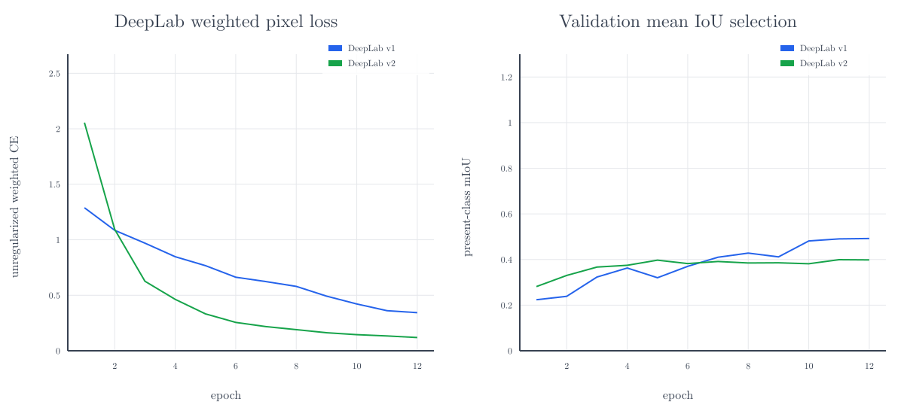
V1 selects epoch11 with validation mean IoU.456045; native-resolution test accuracy/mIoU are.861484/.523973. V2 also selects epoch11, with validation mIoU.398519; test accuracy/mIoU are.845534/.458820. V1's validation score is still rising in this short 12-epoch fit, while V2's has levelled off near.39 since epoch4. Both retain foreground class errors. On the separate first-four-image32px subset,fixed CRF changes mIoU.420189->.430406 for V1 and.399033->.415209 for V2. These modest subset gains do not replace or improve the reported96px test metric.
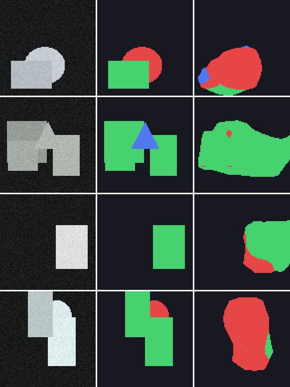
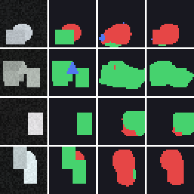
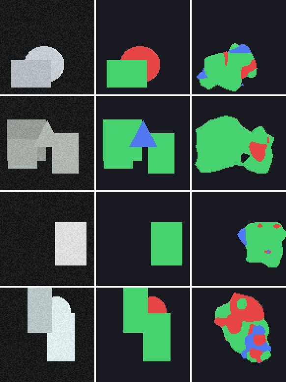
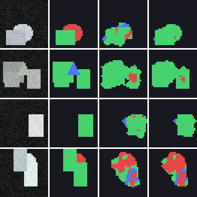
Native confusion matrices
These matrices use the held-out predictions from the executed program above.
The native ConfusionMatrix SVG API labels exact counts with true classes
running from top to bottom and predicted classes from left to right.
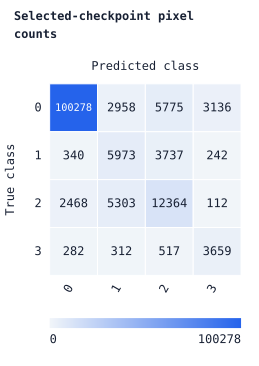
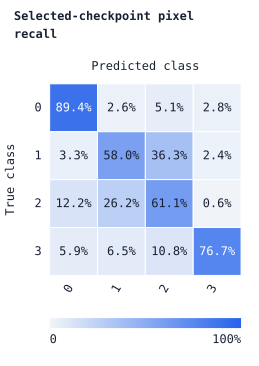
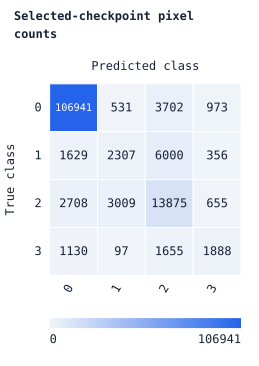
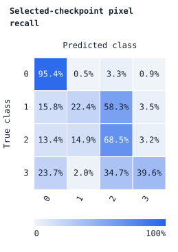
Regenerate adjacent views from this run
#include <dm/dm.hpp>
int main(){std::filesystem::copy_file("build/deeplab_v1_v2_confusion_api_0.svg","build/export_deeplab_v1_v2_confusion_api_0.svg",std::filesystem::copy_options::overwrite_existing);}#include <dm/dm.hpp>
int main(){std::filesystem::copy_file("build/deeplab_v1_v2_confusion_api_0_normalized.svg","build/export_deeplab_v1_v2_confusion_api_0_normalized.svg",std::filesystem::copy_options::overwrite_existing);}#include <dm/dm.hpp>
int main(){std::filesystem::copy_file("build/deeplab_v1_v2_confusion_api_1.svg","build/export_deeplab_v1_v2_confusion_api_1.svg",std::filesystem::copy_options::overwrite_existing);}#include <dm/dm.hpp>
int main(){std::filesystem::copy_file("build/deeplab_v1_v2_confusion_api_1_normalized.svg","build/export_deeplab_v1_v2_confusion_api_1_normalized.svg",std::filesystem::copy_options::overwrite_existing);}#include <dm/dm.hpp>
int main(){std::filesystem::copy_file("build/deeplab_v1_v2_crf_1.png","build/export_deeplab_v1_v2_crf_1.png",std::filesystem::copy_options::overwrite_existing);}#include <dm/dm.hpp>
int main(){std::filesystem::copy_file("build/deeplab_v1_v2_crf_2.png","build/export_deeplab_v1_v2_crf_2.png",std::filesystem::copy_options::overwrite_existing);}#include <dm/dm.hpp>
int main(){std::filesystem::copy_file("build/deeplab_v1_v2_predictions_1.png","build/export_deeplab_v1_v2_predictions_1.png",std::filesystem::copy_options::overwrite_existing);}#include <dm/dm.hpp>
int main(){std::filesystem::copy_file("build/deeplab_v1_v2_predictions_2.png","build/export_deeplab_v1_v2_predictions_2.png",std::filesystem::copy_options::overwrite_existing);}Conclusion
The executed tables and prediction galleries above describe the current selected checkpoint. Assess localization, class errors and overlap quality together with validation selection and the bounded fitting budget.
References
- [Chen et al., Semantic Image Segmentation with Deep Convolutional Nets and Fully Connected CRFs](https://arxiv.org/abs/1412.7062).
- [Chen et al., DeepLab: Semantic Image Segmentation with Deep Convolutional Nets,Atrous Convolution,and Fully Connected CRFs](https://arxiv.org/abs/1606.00915).
- [Krähenbühl and Koltun(2011), Efficient Inference in Fully Connected CRFs with Gaussian Edge Potentials](https://arxiv.org/abs/1210.5644).